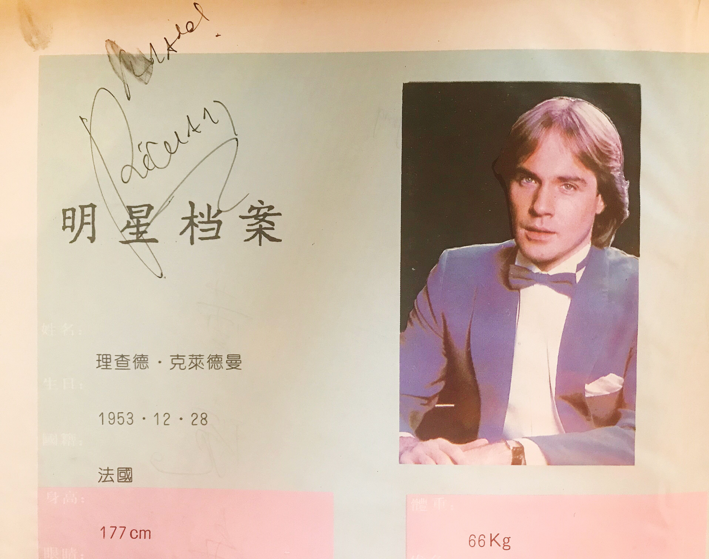

Personal Web
当前位置：| 业余爱好 |
当前位置：| 业余爱好 |
To narrate something about my experience of learning the piano
2003年6月，我开始了我的第一堂钢琴课。从4岁起，我就踏上了我的学琴之路。任何一门技艺的练习都非常不易，在我学习钢琴的过程中，遭遇过不少瓶颈。学习乐器的过程是枯燥乏味的，尤其是考级阶段，时刻考验着学生的耐性和意志。
在学琴的过程中，我的老师总会鼓励我参加各种比赛和演出，而这并不仅仅是为了一份荣誉，更加重要的是，这是一份能够提升能力、磨练意志的任务，能够激励我付出更多的时间和精力去练习，在积累经验的同时不断进步。其次，这是一种提高心理素质的方式，在观众的注视下，要沉着冷静，在演奏失误时要随机应变。而正是这些经历，让我的学琴之路充满色彩。在老师的教导和父母的鼓励下，我也取得了一些喜人的成绩：
2009年，我在第二届全国“中华宝宝”才艺展示活动中，荣获海口赛区的器乐类第三名，进入全国总决赛。次年，我跟随老师去北京参加总决赛，荣获器乐专业组铜奖。2011年，参加第十五届香港世界青少年“金紫荆花奖”艺术大赛，荣获海南赛区最高奖。
同年，我通过了中国音乐学院社会艺术水平考级的钢琴专业十级考试。
2012至2013年，我参加“光大梦想 爱心启航”全国青少年才艺展评公益活动，连续两年荣获海南赛区少年组金奖。
2012年，法国钢琴家理查德·克莱德曼（Richard Clayderman）举办中国巡演，我在海口纪念音乐会的琴童选拔赛中，荣获与理查德·克莱德曼同台的殊荣，在演出当晚与通过选拔的琴童共同合奏由他本人改编的现代钢琴曲《我爱北京天安门》。
2014年就读高中时期，我加入学校梦音乐社，并与社员共同组建了乐队，名为Burning Star，由我担任键盘手，另外还有吉他手、贝斯手、鼓手和主唱。成立乐队后，多次出演校社团联合表演，排演节目中包含《Vivala Vida》、《Fire》、《漂洋过海来看你》等歌曲。另外，在校期间，曾为学校声乐团排练伴奏。
2017年高中毕业后的假期，在学琴时期所在的艺术团兼职，为学习钢琴并处于考级阶段的学生做陪练。
从前到现在，学习钢琴对我的影响都是很大的。小时候练琴遭遇瓶颈期，随时都想放弃，但幸好有老师和父母的开导，让我能够收获这项技能。在我的中学时期，从疲惫的学习中抽出时间练琴，可以帮助我缓解学习压力带来的焦虑。对现在的我来说，偶尔练琴能够让我身心舒畅，沉浸在音乐之中是一种莫大的乐趣。